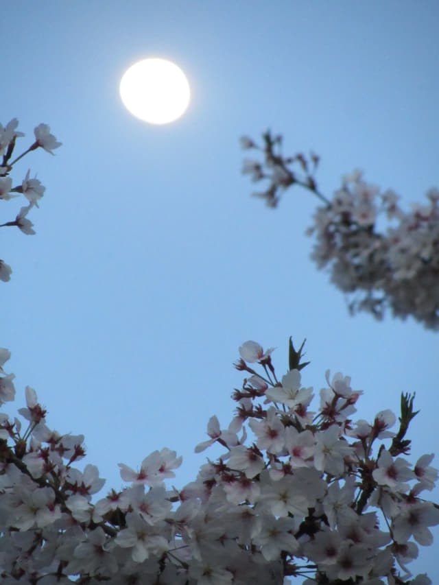

吃完簡單晚餐, 離開餐館, 走過馬路便是順天下集市。來過順天下集市不下十次, 每次都是黑漆漆的, 一片冷清, 今天竟然燈火通明, 很多當地市民都朝那裡走去, 十分熱鬧, 不知今天是什麼日子。想起我們都是平日來, 莫非順天下集市每逢星期六晚上都那麼熱鬧的?
順天下集市 (순천아랫장) 星期六熱鬧夜市
來了順天下集市那麼多次, 終於第一次看到那麼熱鬧。順天下集市內有幾十間攤檔, 食物一點也不便宜, 但仍然人頭湧湧, 座無虛席, 可見韓國當地市民的消費是多麼強勁, 某些國家想試圖用旅遊經濟手段來威嚇韓國, 這方法肯定行不通。
順天東川畔 月色下的櫻花和梅花
順天下集市的食物很貴, 看看便算了! 離開, 來到順天東川畔, 抬頭望望天空, 明月晈潔, 剛好掛在河畔的櫻花上, 氣氛浪漫, 很美, 便忍不住在樹下徘徊了一會。

月色下的梅花更美。
豐得橋(풍덕교)上 順天東川夜色
欣賞完月色下的櫻花和梅花, 接著走上豐得橋, 慢慢走往賓館。順天東川畔已燈火通明, 燈光倒影在河中, 景色相當優美祥和, 如詩如畫。
順天竹島峰山頂上的江南亭展望台, 我們昨天傍晚就在那裡欣賞東川和順天夜色。看清楚, 原來江南亭展望台的燈光是不斷的轉換顏色的, 紫色、橙色、井藍色、綠色、……. , 真是數也數不清。

在豐得橋上欣賞完順天東川夜色, 黑幕已經拉下, 沿昏暗馬路繼續向前走往賓館, 經過一間 Guest House, 只看到酒店燈光的輪廓和天空中的月亮, 十分有趣。
因晚餐吃得不太飽, 在賓館附近的 Mini Shop 買了一個 Cheese Cake。約晚上八時十五分抵 Guesthouse Happy Tour 賓館, 返回 1F 房間, 休息一會, 吃了剛剛買的 Cheese Cake, 寫了今天的日記。
時間過得真快, 回想起三天前下午冒著傾盆雨走來賓館的狼狽情景, 明天早上便離開, 乘巴士往這旅程的第十一個停留城市 — 慶尚南道．南海郡 (남해 Namhae), 也意味這韓國春天之旅漸漸接近尾聲了。